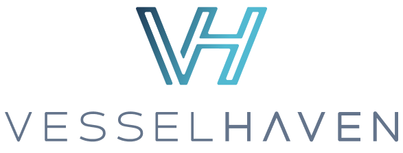
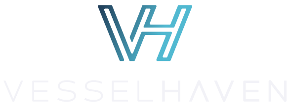
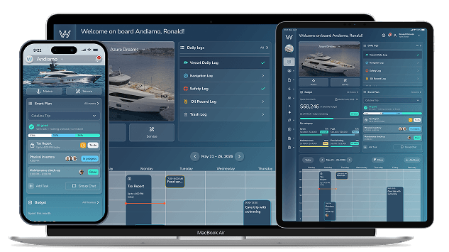
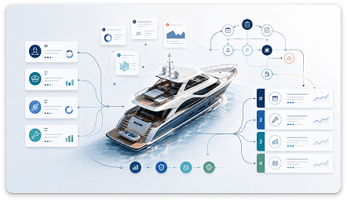

ROLE-SPECIFIC
Relevant access
Dashboard and navigation designs are organised around the information each role needs.
VesselHaven · Product Design Case Study


Yacht Life Should Be Easier
AI-assisted yacht management, community & services marketplace — across desktop, tablet, and mobile.

VesselHaven brings yacht owners, captains, crew, service providers, and guests into one connected product experience. Its design brings operational information and collaboration into a shared structure while giving each role a relevant path through it.
PROCESS & CONTRIBUTION
Explore how research, role-based workflows, reusable systems, and user feedback shaped the product.
1. Discovery
The project involved owners, captains, crew, brokers, service providers, and guests. Their responsibilities and information needs differ, even when they are coordinating the same trip.

2. UX & workflows
Hotjar helped us investigate onboarding friction across owners, crew, service providers, and guests. We adapted the entry paths to each role's immediate needs.
Guests were better served by a magic-link invitation that skips most onboarding, with preferences collected optionally later. For owners, we kept the essential information mandatory and moved optional details to the end.
These screenshots from the development build show role selection and the owner completion screen. The completion screen confirms that the account, vessel, and dashboard are ready, then offers a next action such as inviting crew.
The Plan screen brings trip cards and a weekly calendar into the same workspace. The views below show scheduled activities later in the week and an event detail screen with trip information, an invitation-link action, guest responses, and crew.
These are screenshots of the actual development build. They show the calendar and event detail experience, rather than an event-creation form.
3. Design System
I created coordinated light and dark themes using semantic colour tokens, Nunito Sans typography, and reusable navigation, form, status, and dashboard patterns.
Shared tokens and component states were designed to keep information hierarchy consistent across modules and responsive layouts. The service-history examples show the same content structure in both themes, including status indicators and data rows.
The glass card is one surface treatment in the system. Its elevation and translucency were designed to preserve hierarchy over the brand gradient; readability in real lighting conditions still needs direct validation.
4. Prototyping
The team created interactive Figma prototypes at three levels: individual screens, module interactions, and connected user journeys.
I used Claude to generate and compare possible interaction directions, then reviewed and refined those outputs against the role profiles, information architecture, and visual system. Alternatives and edge cases could be explored before a direction moved forward.
Approved prototypes also informed frontend code for engineering handoff. I worked with developers to review how the proposed patterns translated into the product.
PROTOTYPING ACTIVITIES
5. Testing & iteration
A dedicated test version let captains and owners work through realistic tasks. Usability sessions provided task-based observations; conversations at community events and industry exhibitions offered additional, more informal feedback.
The team grouped observations into recurring themes and reviewed them against user impact, business value, frequency, and relevance across roles. Navigation, terminology, information hierarchy, and operational flows were revisited in subsequent design rounds.
TESTING AND ITERATION ACTIVITIES
6. Product experience
The design brings operational information into a responsive structure for desktop, tablet, and mobile. Role-specific dashboards and navigation present relevant entry points while shared patterns connect related tasks.
DESIGN OUTCOME
The work turned research themes, role profiles, and interconnected requirements into an information architecture, interactive prototypes, responsive screens, and a reusable design system.
ROLE-SPECIFIC
Dashboard and navigation designs are organised around the information each role needs.
CONNECTED
Trip planning, tasks, and operational information share a consistent structure.
REUSABLE
Semantic tokens and components support responsive layouts in light and dark themes.
Product discovery · UX research · Information architecture · Responsive design · Design systems · Prototyping · Developer handoff
NEXT PROJECT